Derivation colors · sand terraces · green enclosures · violet transitions · red source features
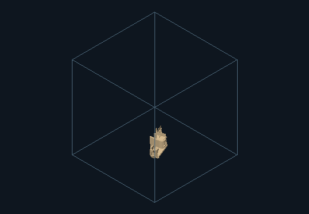
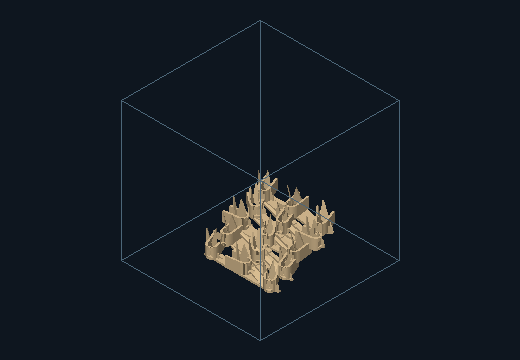
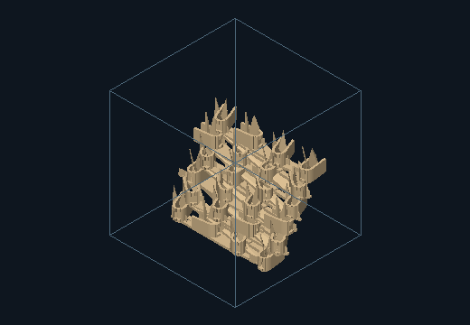
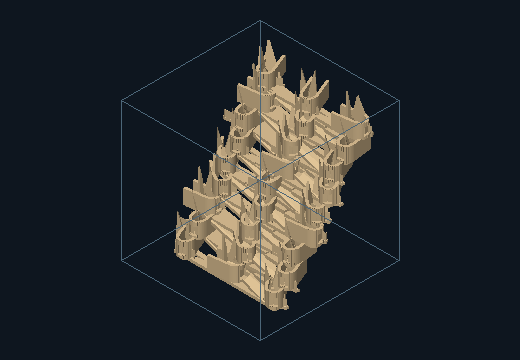
Source features, component provenance and measurements
| Instance | Source / role | Region / elevation | Yaw / tilt |
|---|---|---|---|
| instance-0 | 0 / L | 0 / 1.08 | 0 / 0 |
| instance-1 | 1 / U | 0 / 1.08 | 15 / 0 |
| instance-2 | 2 / V | 0 / 1.08 | 30 / 90 |
| instance-3 | 3 / L | 1 / 6.13 | 45 / 0 |
| instance-4 | 4 / U | 1 / 6.13 | 90 / 0 |
| instance-5 | 5 / V | 1 / 6.13 | 0 / 90 |
| instance-6 | 0 / L | 2 / 11.18 | 15 / 0 |
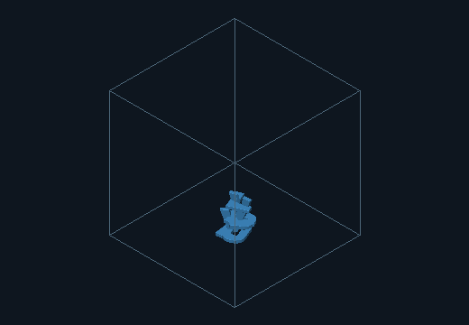
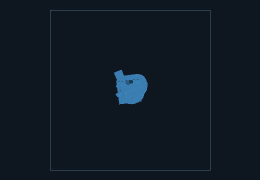
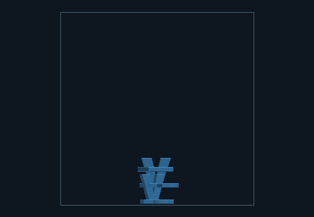
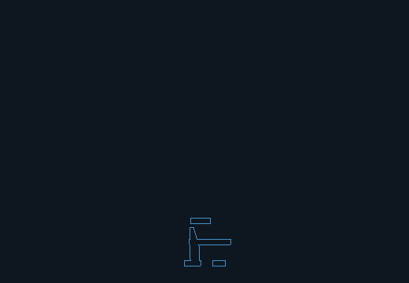
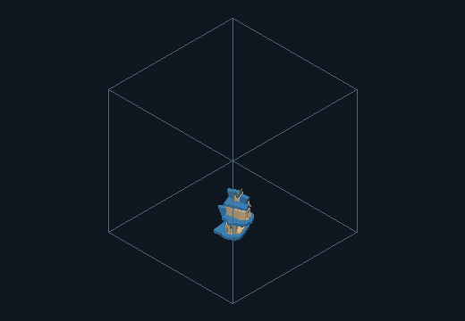
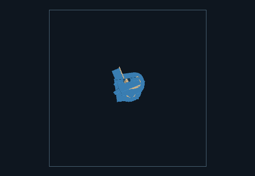
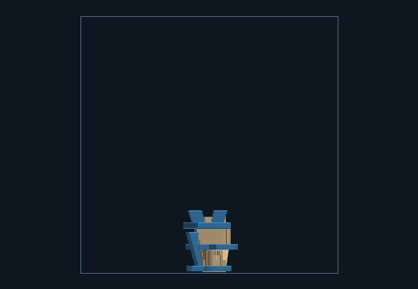
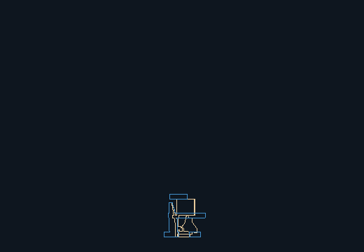
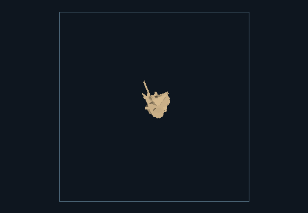
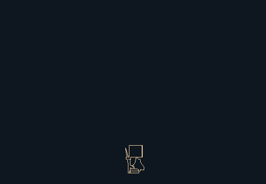
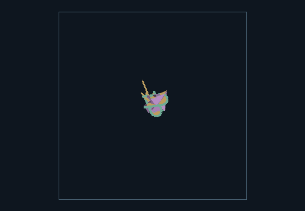
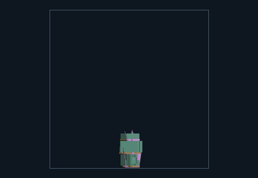
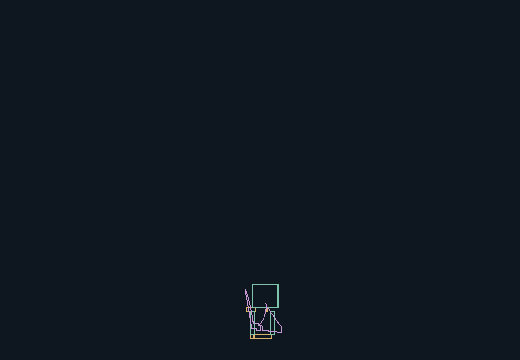
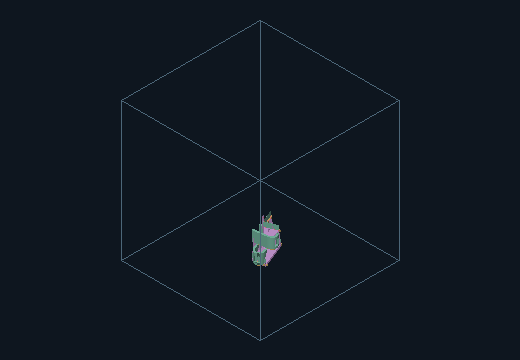
Source features, component provenance and measurements
| Instance | Source / role | Region / elevation | Yaw / tilt |
|---|---|---|---|
| instance-0 | 0 / L | 0 / 1.08 | 0 / 0 |
| instance-1 | 1 / U | 0 / 1.08 | 15 / 0 |
| instance-2 | 2 / V | 0 / 1.08 | 30 / 90 |
| instance-3 | 3 / L | 1 / 1.08 | 45 / 0 |
| instance-4 | 4 / U | 1 / 1.08 | 90 / 0 |
| instance-5 | 5 / V | 1 / 1.08 | 0 / 90 |
| instance-6 | 0 / L | 2 / 1.08 | 15 / 0 |
| instance-7 | 1 / U | 2 / 1.08 | 30 / 0 |
| instance-8 | 2 / V | 2 / 1.08 | 45 / 90 |
| instance-9 | 3 / L | 3 / 3.61 | 90 / 0 |
| instance-10 | 4 / U | 3 / 3.61 | 0 / 0 |
| instance-11 | 5 / V | 3 / 3.61 | 15 / 90 |
| instance-12 | 0 / L | 4 / 3.61 | 30 / 0 |
| instance-13 | 1 / U | 4 / 3.61 | 45 / 0 |
| instance-14 | 2 / V | 4 / 3.61 | 90 / 90 |
| instance-15 | 3 / L | 5 / 3.61 | 0 / 0 |
| instance-16 | 4 / U | 5 / 3.61 | 15 / 0 |
| instance-17 | 5 / V | 5 / 3.61 | 30 / 90 |
| instance-18 | 0 / L | 6 / 6.13 | 45 / 0 |
| instance-19 | 1 / U | 6 / 6.13 | 90 / 0 |
| instance-20 | 2 / V | 6 / 6.13 | 0 / 90 |
| instance-21 | 3 / L | 7 / 6.13 | 15 / 0 |
| instance-22 | 4 / U | 7 / 6.13 | 30 / 0 |
| instance-23 | 5 / V | 7 / 6.13 | 45 / 90 |
| instance-24 | 0 / L | 8 / 6.13 | 90 / 0 |
| instance-25 | 1 / U | 8 / 6.13 | 0 / 0 |
| instance-26 | 2 / V | 8 / 6.13 | 15 / 90 |
| instance-27 | 3 / L | 9 / 8.66 | 30 / 0 |
| instance-28 | 4 / U | 9 / 8.66 | 45 / 0 |
| instance-29 | 5 / V | 9 / 8.66 | 90 / 90 |
| instance-30 | 0 / L | 10 / 8.66 | 0 / 0 |
| instance-31 | 1 / U | 10 / 8.66 | 15 / 0 |
| instance-32 | 2 / V | 10 / 8.66 | 30 / 90 |
| instance-33 | 3 / L | 11 / 8.66 | 45 / 0 |
| instance-34 | 4 / U | 11 / 8.66 | 90 / 0 |
| instance-35 | 5 / V | 11 / 8.66 | 0 / 90 |
| instance-36 | 0 / L | 12 / 11.18 | 15 / 0 |
| instance-37 | 1 / U | 12 / 11.18 | 15 / 0 |
| instance-38 | 2 / V | 12 / 11.18 | 45 / 90 |
| instance-39 | 3 / L | 13 / 11.18 | 90 / 0 |
| instance-40 | 4 / U | 13 / 11.18 | 0 / 0 |
| instance-41 | 5 / V | 13 / 11.18 | 15 / 90 |
| instance-42 | 0 / L | 14 / 11.18 | 30 / 0 |
| instance-43 | 1 / U | 14 / 11.18 | 15 / 0 |
| instance-44 | 2 / V | 14 / 11.18 | 90 / 90 |
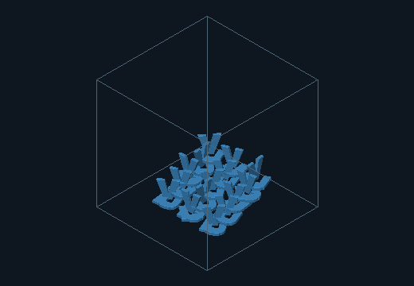
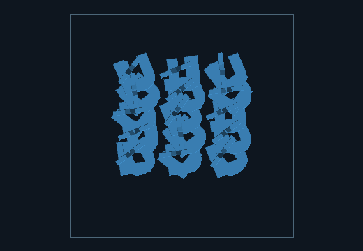
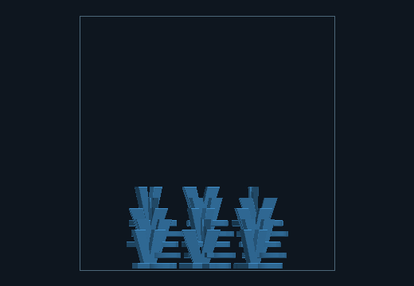
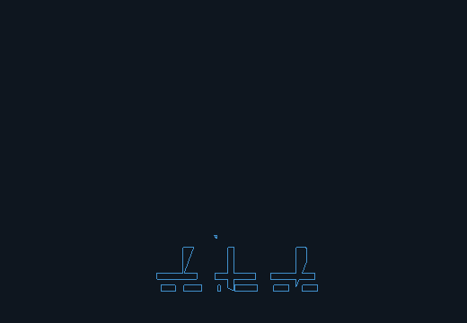
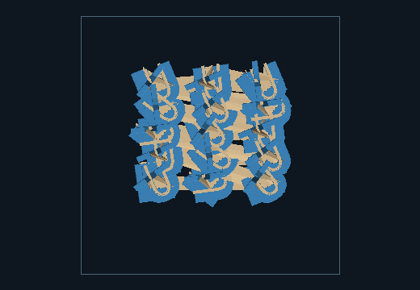
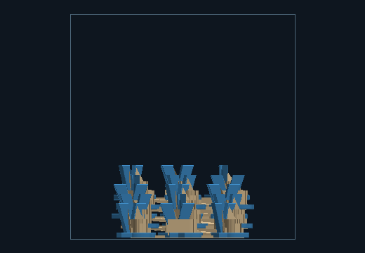
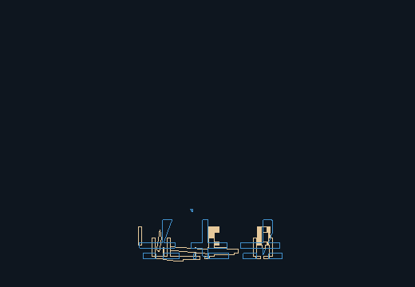
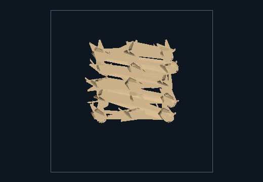
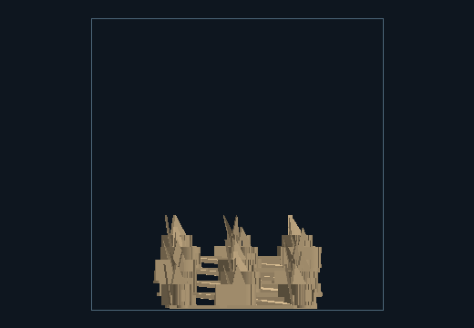
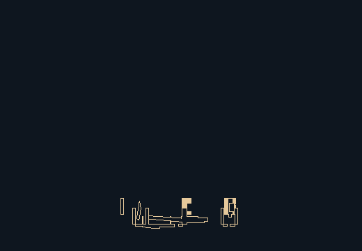
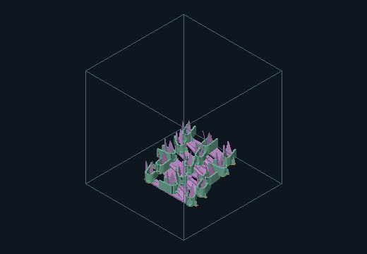
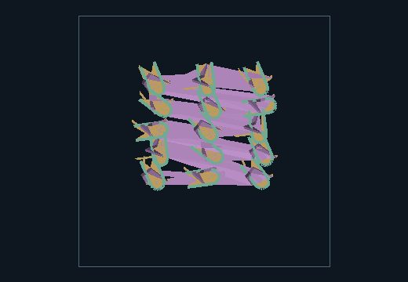
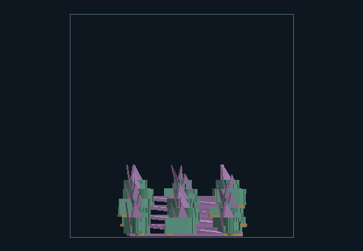
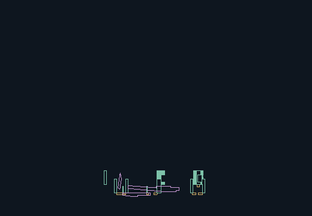
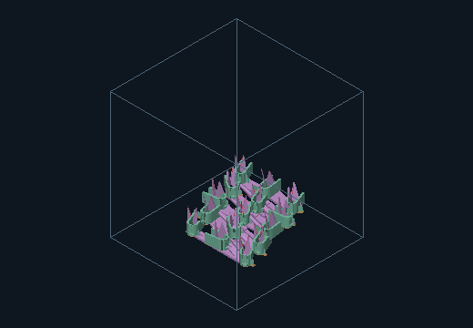
Source features, component provenance and measurements
| Instance | Source / role | Region / elevation | Yaw / tilt |
|---|---|---|---|
| instance-0 | 0 / L | 0 / 1.32 | 0 / 0 |
| instance-1 | 1 / U | 0 / 1.32 | 15 / 0 |
| instance-2 | 2 / V | 0 / 1.32 | 30 / 90 |
| instance-3 | 3 / L | 1 / 1.32 | 45 / 0 |
| instance-4 | 4 / U | 1 / 1.32 | 90 / 0 |
| instance-5 | 5 / V | 1 / 1.32 | 0 / 90 |
| instance-6 | 0 / L | 2 / 1.32 | 15 / 0 |
| instance-7 | 1 / U | 2 / 1.32 | 30 / 0 |
| instance-8 | 2 / V | 2 / 1.32 | 45 / 90 |
| instance-9 | 3 / L | 3 / 1.32 | 90 / 0 |
| instance-10 | 4 / U | 3 / 1.32 | 0 / 0 |
| instance-11 | 5 / V | 3 / 1.32 | 15 / 90 |
| instance-12 | 0 / L | 4 / 6.90 | 30 / 0 |
| instance-13 | 1 / U | 4 / 6.90 | 45 / 0 |
| instance-14 | 2 / V | 4 / 6.90 | 90 / 90 |
| instance-15 | 3 / L | 5 / 6.90 | 0 / 0 |
| instance-16 | 4 / U | 5 / 6.90 | 15 / 0 |
| instance-17 | 5 / V | 5 / 6.90 | 30 / 90 |
| instance-18 | 0 / L | 6 / 6.90 | 45 / 0 |
| instance-19 | 1 / U | 6 / 6.90 | 90 / 0 |
| instance-20 | 2 / V | 6 / 6.90 | 0 / 90 |
| instance-21 | 3 / L | 7 / 6.90 | 15 / 0 |
| instance-22 | 4 / U | 7 / 6.90 | 30 / 0 |
| instance-23 | 5 / V | 7 / 6.90 | 45 / 90 |
| instance-24 | 0 / L | 8 / 12.48 | 90 / 0 |
| instance-25 | 1 / U | 8 / 12.48 | 0 / 0 |
| instance-26 | 2 / V | 8 / 12.48 | 15 / 90 |
| instance-27 | 3 / L | 9 / 12.48 | 30 / 0 |
| instance-28 | 4 / U | 9 / 12.48 | 45 / 0 |
| instance-29 | 5 / V | 9 / 12.48 | 90 / 90 |
| instance-30 | 0 / L | 10 / 12.48 | 0 / 0 |
| instance-31 | 1 / U | 10 / 12.48 | 15 / 0 |
| instance-32 | 2 / V | 10 / 12.48 | 30 / 90 |
| instance-33 | 3 / L | 11 / 12.48 | 45 / 0 |
| instance-34 | 4 / U | 11 / 12.48 | 90 / 0 |
| instance-35 | 5 / V | 11 / 12.48 | 0 / 90 |
| instance-36 | 0 / L | 12 / 18.06 | 15 / 0 |
| instance-37 | 1 / U | 12 / 18.06 | 30 / 0 |
| instance-38 | 2 / V | 12 / 18.06 | 45 / 90 |
| instance-39 | 3 / L | 13 / 18.06 | 90 / 0 |
| instance-40 | 4 / U | 13 / 18.06 | 0 / 0 |
| instance-41 | 5 / V | 13 / 18.06 | 15 / 90 |
| instance-42 | 0 / L | 14 / 18.06 | 30 / 0 |
| instance-43 | 1 / U | 14 / 18.06 | 45 / 0 |
| instance-44 | 2 / V | 14 / 18.06 | 90 / 90 |
| instance-45 | 3 / L | 15 / 18.06 | 0 / 0 |
| instance-46 | 4 / U | 15 / 18.06 | 15 / 0 |
| instance-47 | 5 / V | 15 / 18.06 | 30 / 90 |
| instance-48 | 0 / L | 16 / 23.64 | 45 / 0 |
| instance-49 | 1 / U | 16 / 23.64 | 90 / 0 |
| instance-50 | 2 / V | 16 / 23.64 | 0 / 90 |
| instance-51 | 3 / L | 17 / 23.64 | 15 / 0 |
| instance-52 | 4 / U | 17 / 23.64 | 30 / 0 |
| instance-53 | 5 / V | 17 / 23.64 | 45 / 90 |
| instance-54 | 0 / L | 18 / 23.64 | 90 / 0 |
| instance-55 | 1 / U | 18 / 23.64 | 0 / 0 |
| instance-56 | 2 / V | 18 / 23.64 | 15 / 90 |
| instance-57 | 3 / L | 19 / 23.64 | 30 / 0 |
| instance-58 | 4 / U | 19 / 23.64 | 45 / 0 |
| instance-59 | 5 / V | 19 / 23.64 | 90 / 90 |
| instance-60 | 0 / L | 20 / 29.22 | 0 / 0 |
| instance-61 | 1 / U | 20 / 29.22 | 15 / 0 |
| instance-62 | 2 / V | 20 / 29.22 | 30 / 90 |
| instance-63 | 3 / L | 21 / 29.22 | 45 / 0 |
| instance-64 | 4 / U | 21 / 29.22 | 90 / 0 |
| instance-65 | 5 / V | 21 / 29.22 | 0 / 90 |
| instance-66 | 0 / L | 22 / 29.22 | 15 / 0 |
| instance-67 | 1 / U | 22 / 29.22 | 15 / 0 |
| instance-68 | 2 / V | 22 / 29.22 | 45 / 90 |
| instance-69 | 3 / L | 23 / 29.22 | 90 / 0 |
| instance-70 | 4 / U | 23 / 29.22 | 0 / 0 |
| instance-71 | 5 / V | 23 / 29.22 | 15 / 90 |
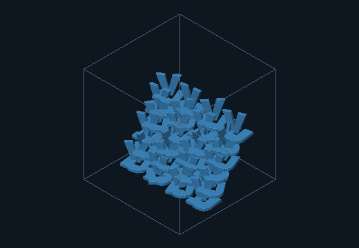
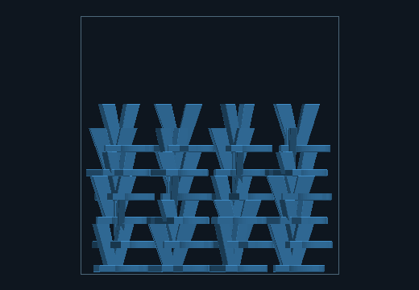
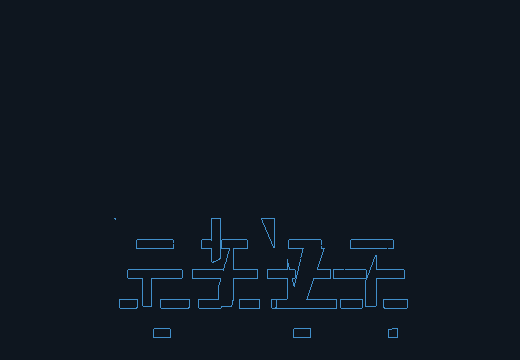
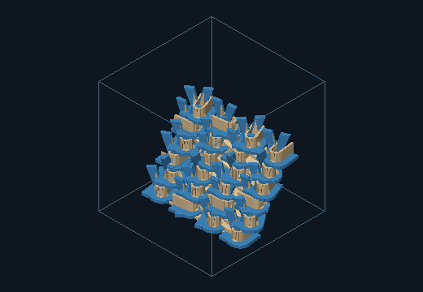
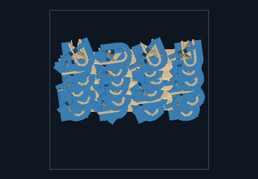
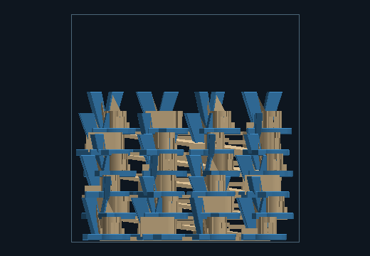
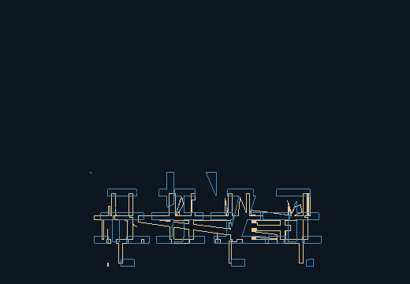
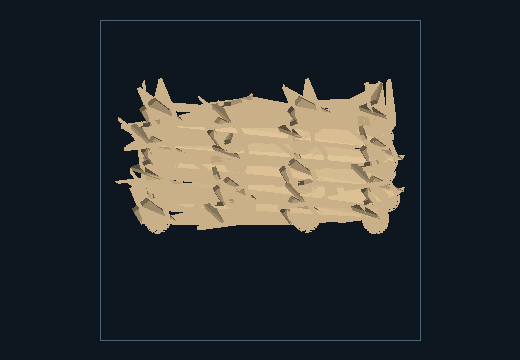
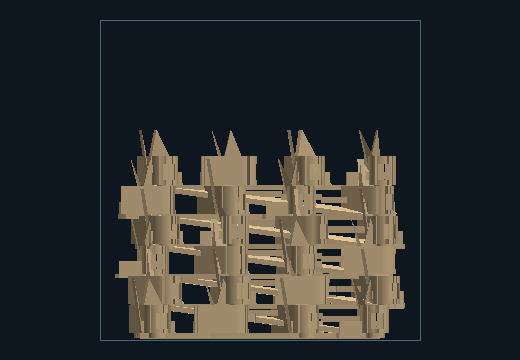
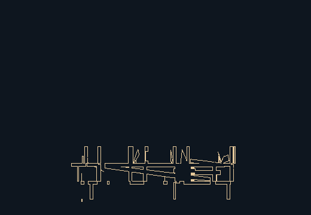
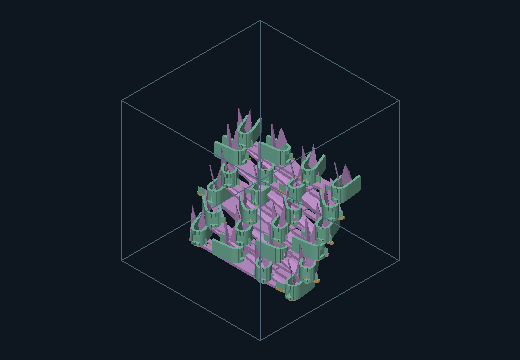
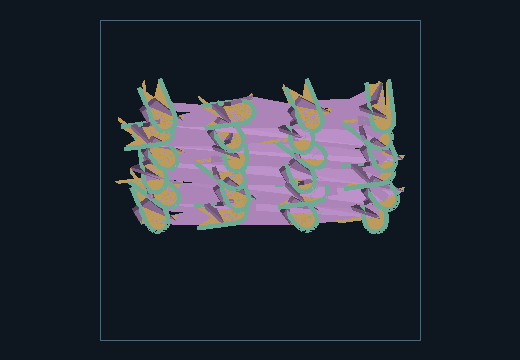
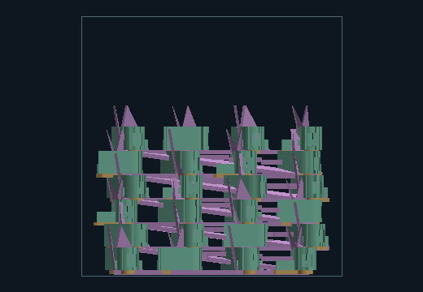
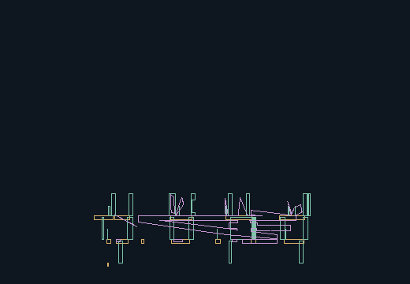
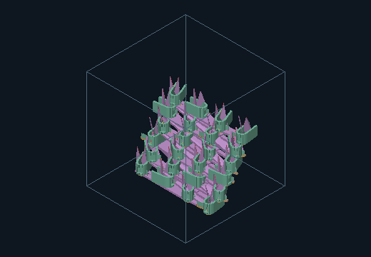
Source features, component provenance and measurements
| Instance | Source / role | Region / elevation | Yaw / tilt |
|---|---|---|---|
| instance-0 | 0 / L | 0 / 1.56 | 0 / 0 |
| instance-1 | 1 / U | 0 / 1.56 | 15 / 0 |
| instance-2 | 2 / V | 0 / 1.56 | 30 / 90 |
| instance-3 | 3 / L | 1 / 1.56 | 45 / 0 |
| instance-4 | 4 / U | 1 / 1.56 | 90 / 0 |
| instance-5 | 5 / V | 1 / 1.56 | 0 / 90 |
| instance-6 | 0 / L | 2 / 1.56 | 15 / 0 |
| instance-7 | 1 / U | 2 / 1.56 | 30 / 0 |
| instance-8 | 2 / V | 2 / 1.56 | 45 / 90 |
| instance-9 | 3 / L | 3 / 7.27 | 90 / 0 |
| instance-10 | 4 / U | 3 / 7.27 | 0 / 0 |
| instance-11 | 5 / V | 3 / 7.27 | 15 / 90 |
| instance-12 | 0 / L | 4 / 7.27 | 30 / 0 |
| instance-13 | 1 / U | 4 / 7.27 | 45 / 0 |
| instance-14 | 2 / V | 4 / 7.27 | 90 / 90 |
| instance-15 | 3 / L | 5 / 7.27 | 0 / 0 |
| instance-16 | 4 / U | 5 / 7.27 | 15 / 0 |
| instance-17 | 5 / V | 5 / 7.27 | 30 / 90 |
| instance-18 | 0 / L | 6 / 12.98 | 45 / 0 |
| instance-19 | 1 / U | 6 / 12.98 | 90 / 0 |
| instance-20 | 2 / V | 6 / 12.98 | 0 / 90 |
| instance-21 | 3 / L | 7 / 12.98 | 15 / 0 |
| instance-22 | 4 / U | 7 / 12.98 | 30 / 0 |
| instance-23 | 5 / V | 7 / 12.98 | 45 / 90 |
| instance-24 | 0 / L | 8 / 12.98 | 90 / 0 |
| instance-25 | 1 / U | 8 / 12.98 | 0 / 0 |
| instance-26 | 2 / V | 8 / 12.98 | 15 / 90 |
| instance-27 | 3 / L | 9 / 18.70 | 30 / 0 |
| instance-28 | 4 / U | 9 / 18.70 | 45 / 0 |
| instance-29 | 5 / V | 9 / 18.70 | 90 / 90 |
| instance-30 | 0 / L | 10 / 18.70 | 0 / 0 |
| instance-31 | 1 / U | 10 / 18.70 | 15 / 0 |
| instance-32 | 2 / V | 10 / 18.70 | 30 / 90 |
| instance-33 | 3 / L | 11 / 18.70 | 45 / 0 |
| instance-34 | 4 / U | 11 / 18.70 | 90 / 0 |
| instance-35 | 5 / V | 11 / 18.70 | 0 / 90 |
| instance-36 | 0 / L | 12 / 24.41 | 15 / 0 |
| instance-37 | 1 / U | 12 / 24.41 | 30 / 0 |
| instance-38 | 2 / V | 12 / 24.41 | 45 / 90 |
| instance-39 | 3 / L | 13 / 24.41 | 90 / 0 |
| instance-40 | 4 / U | 13 / 24.41 | 0 / 0 |
| instance-41 | 5 / V | 13 / 24.41 | 15 / 90 |
| instance-42 | 0 / L | 14 / 24.41 | 30 / 0 |
| instance-43 | 1 / U | 14 / 24.41 | 45 / 0 |
| instance-44 | 2 / V | 14 / 24.41 | 90 / 90 |
| instance-45 | 3 / L | 15 / 30.12 | 0 / 0 |
| instance-46 | 4 / U | 15 / 30.12 | 15 / 0 |
| instance-47 | 5 / V | 15 / 30.12 | 30 / 90 |
| instance-48 | 0 / L | 16 / 30.12 | 45 / 0 |
| instance-49 | 1 / U | 16 / 30.12 | 90 / 0 |
| instance-50 | 2 / V | 16 / 30.12 | 0 / 90 |
| instance-51 | 3 / L | 17 / 30.12 | 15 / 0 |
| instance-52 | 4 / U | 17 / 30.12 | 30 / 0 |
| instance-53 | 5 / V | 17 / 30.12 | 45 / 90 |
| instance-54 | 0 / L | 18 / 35.84 | 90 / 0 |
| instance-55 | 1 / U | 18 / 35.84 | 0 / 0 |
| instance-56 | 2 / V | 18 / 35.84 | 15 / 90 |
| instance-57 | 3 / L | 19 / 35.84 | 30 / 0 |
| instance-58 | 4 / U | 19 / 35.84 | 45 / 0 |
| instance-59 | 5 / V | 19 / 35.84 | 90 / 90 |
| instance-60 | 0 / L | 20 / 35.84 | 0 / 0 |
| instance-61 | 1 / U | 20 / 35.84 | 15 / 0 |
| instance-62 | 2 / V | 20 / 35.84 | 30 / 90 |
| instance-63 | 3 / L | 21 / 41.55 | 45 / 0 |
| instance-64 | 4 / U | 21 / 41.55 | 90 / 0 |
| instance-65 | 5 / V | 21 / 41.55 | 0 / 90 |
| instance-66 | 0 / L | 22 / 41.55 | 15 / 0 |
| instance-67 | 1 / U | 22 / 41.55 | 30 / 0 |
| instance-68 | 2 / V | 22 / 41.55 | 45 / 90 |
| instance-69 | 3 / L | 23 / 41.55 | 90 / 0 |
| instance-70 | 4 / U | 23 / 41.55 | 0 / 0 |
| instance-71 | 5 / V | 23 / 41.55 | 15 / 90 |
| instance-72 | 0 / L | 24 / 47.26 | 30 / 0 |
| instance-73 | 1 / U | 24 / 47.26 | 15 / 0 |
| instance-74 | 2 / V | 24 / 47.26 | 90 / 90 |
| instance-75 | 3 / L | 25 / 47.26 | 0 / 0 |
| instance-76 | 4 / U | 25 / 47.26 | 15 / 0 |
| instance-77 | 5 / V | 25 / 47.26 | 30 / 90 |
| instance-78 | 0 / L | 26 / 47.26 | 45 / 0 |
| instance-79 | 1 / U | 26 / 47.26 | 90 / 0 |
| instance-80 | 2 / V | 26 / 47.26 | 0 / 90 |
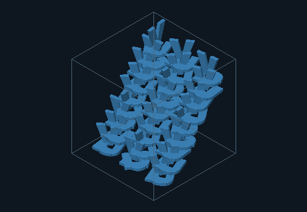
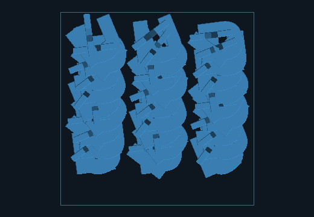